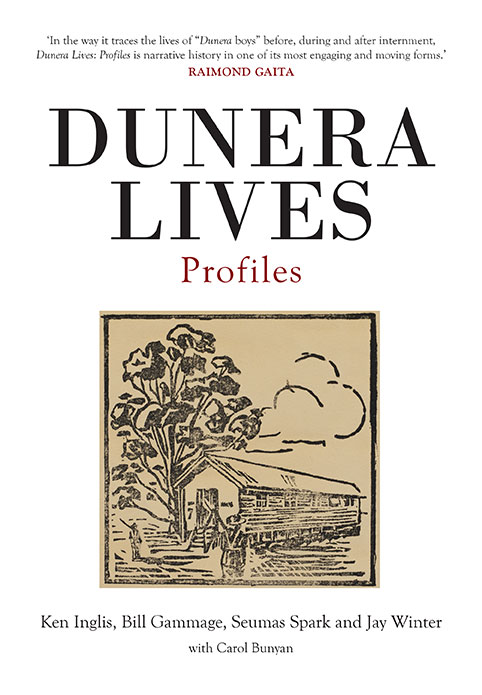

I've mentioned Edward Broughton numerous times on this blog, a man of great humanity who responded to the plight of the Jewish internees who were at his command. A quick snippet from one of the grateful internees. So far I've read it on each occasion at the three dinners I’ve held to raise money for refugees like a kind of prayer. I love this passage:Keenly intelligent, well-read, endowed with a superb sense of humour, completely untainted by any racial prejudice… deeply interested in human beings, he did not only gain immediate respect and obedience, but also the love and affection of the unit. He enjoyed hugely being at its head, learned and meticulously respected Jewish customs, and was immensely proud of the unit because of the splendid work it did, humbly unaware of the fact that it was only he who could have turned these people into willing manual labourers. … He engaged in incessant publicity war on our behalf and fought hard to have our status changed, only to be booted out by the Army eventually. After being shoved around as flotsam and jetsam for many years he managed… to make us feel like human beings again. He restored our faith in man, as something more than 92 per cent water and a few chemicals. He was a scholar and a gentleman.
So when I bought my copy of Dunera Lives Volume II with profiles of numerous Dunera Boys in it, I raced to the front of the book and read Broughton's entry. I asked the publishers of the two volumes, Monash University Press, for permission to publish the profile of Broughton and they agreed and provided me with this pdf file for you pdf file for your delectation. I commend it to you and the book which can be purchased from this link.
An interesting exchange with James Kable in response to my sending this out to my mailing list
I sent this to Carol, one of the authors of the book who was raised in Hay and has made herself the unofficial Dunera archivist poring through the various records. It was Carol who told me the date on which my father was transferred to Tatura, when I thought he'd remained in Hay the entire time.
She wrote back:
On sending this back to Jim he replied: